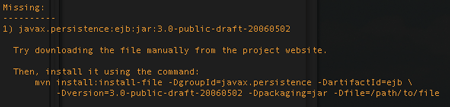

Databinder 0.5 complete, mostly available
Wicket 1.2 was released yesterday, and I flipped the big Databinder 0.5 switch last night. If you’ve configured the Databinder repository you should be able set your Databinder version to 0.5 and start using it right right away.
New Hibernate / Annotations versions are in the Maven repo pipeline. I’ve updated Databinder to depend on those and temporarily hosted them on our own repository. It isn’t clear how to automatically add project bundles to a repo, so I just dumped them in there without checksums. That causes a warning on download, but works.
You’ll also need to pull the latest EJB draft from the Hibernate Annotations download and install it to your repository. Maven’s gotten smarter in recent minor versions; the easiest way to install troublesome (Sun) JARs like this is to try a mvn compile on your project and copy the lengthy install command from Maven’s error message:

After that it will compile properly, though still complaining about the lack of an EJB POM. Maven will just have to chill out until the official repository has everything up later this week. At that point I’ll take down my ramshackle Hibernate distribution stand.
Add a comment